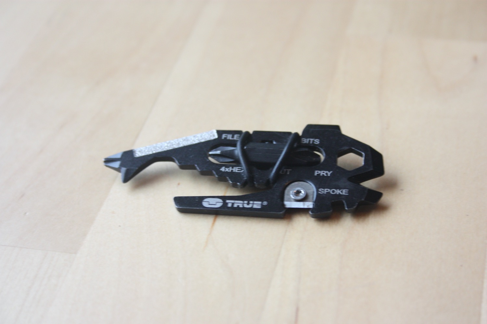

I recently got a small keychain multitool called True Utility Fishface, which amongst other things has a bit driver on it. It is basically just a hex-formed hole in the multitool, and can be used to drive any sort of standard screwdriver bit. The Fishface also comes with special dual bit, which is fastened to the multitool with to small rubber bands, and consists of two sizes of the cross-point/Phillips screwdriver head.4 Jul 2020
På Strynefjellet og i fjellene over Geiranger er det fortsatt mye snø for tiden, og det var mange som var ute og fikk lufta randoskiene sine opp til Blåtind (1663 moh) i dag. Ikke fullt så mange var det som brukte sykkelen oppover fra Geiranger, men vi var ihvertfall tre stykker som stod klar på fergekaia i morges for å bryne oss på stigningen opp til Dalsnibba. For min del ble det en litt tidligere stopp enn planlagt med punktering etter å ha passert Knuten, men med ekstraslange i sadeltaska kom jeg relativt raskt videre, og mange hårnålssvinger senere ankom jeg Dalsnibba (1476 moh).
27 Jun 2020
Det er omtrent 10 år siden jeg første gang hørte om konseptet “Rondane Rundt”. Navnet har flere betydninger; for syklister er det først og fremst snakk om ruta rundt Rondane gjennom Grimsdalen og Atnadalen, over Venabygdsfjellet og opp Gudbrandsdalen. For min del er det først og fremst snakk om den beryktede turen over Rondanes ti topper over 2000 moh (med primærfaktor på minst 50 meter), en tur som har blitt mer kjent som “Rondane 2K-maraton”.
30 May 2020
Some interesting revelations on Facebook’s targeted advertising.
25 Mar 2020

7 Mar 2020

Tidlig i mars hadde det kommet unormalt mye snø i Rondane, og jeg utnytta muligheten til å dra på topptur i området. Planen var egentlig å få gått en runde over noen av toppene over 2000 moh, men mye dyp snø og skredfare gjorde at jeg snudde ved Midtronden, og gikk samme vei tilbake.
Nederst på sida ligger en video fra turen.
20 Sep 2019

10 Sep 2019
5 Jul 2019
10 Mar 2019
17 Feb 2019
27 Jan 2019
28 May 2018
30 May 2016
2 Feb 2014